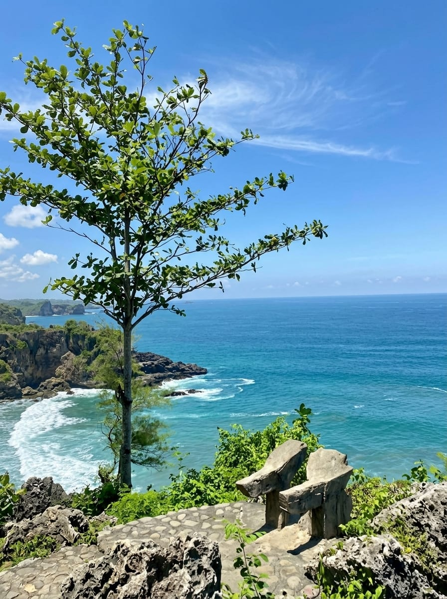

TENTANG
Mengenal Surumanis
Kenali karakter lanskap, lokasi, dan pengalaman yang membentuk Surumanis.
TENTANG SURUMANIS
Satu lanskap, dua sudut pandang.
Surumanis berada di balik bukit, dengan pandangan yang terbuka ke arah Samudra Hindia. Dari ketinggian, garis pantai terasa luas; ketika turun, tebing, karang, dan pasir membentuk pengalaman yang lebih dekat.
Yang membuat tempat ini khas bukan satu titik foto, melainkan hubungan antara bukit dan laut. Satu perjalanan dapat berpindah dari panorama lepas ke jalur pesisir tanpa kehilangan karakter alaminya.
CEK HARI-H
Jam kunjungan
AYAH
Kabupaten Kebumen

forest
Jalan setapak alami di bawah naungan pandan laut menuju deburan ombak karang.
DESA PASIR, AYAH
Kenali karakternya sebelum datang.
Lihat panduan kunjungan.